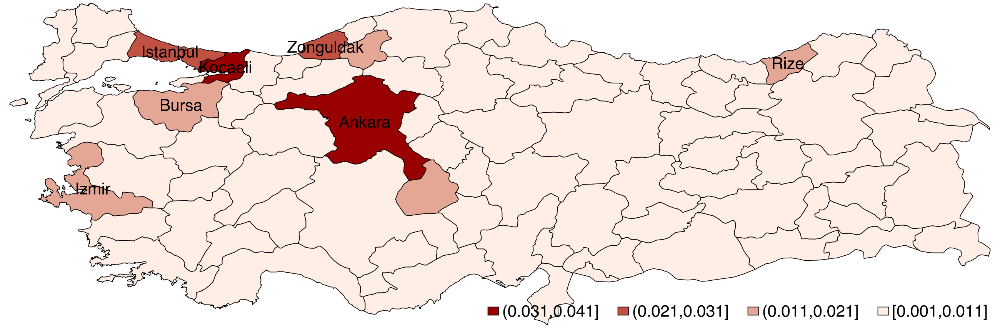
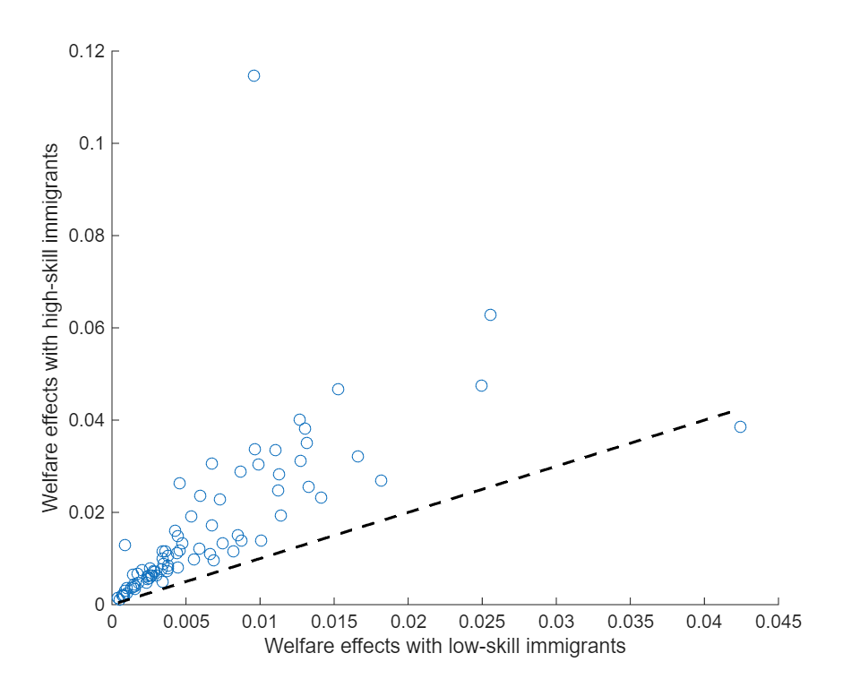
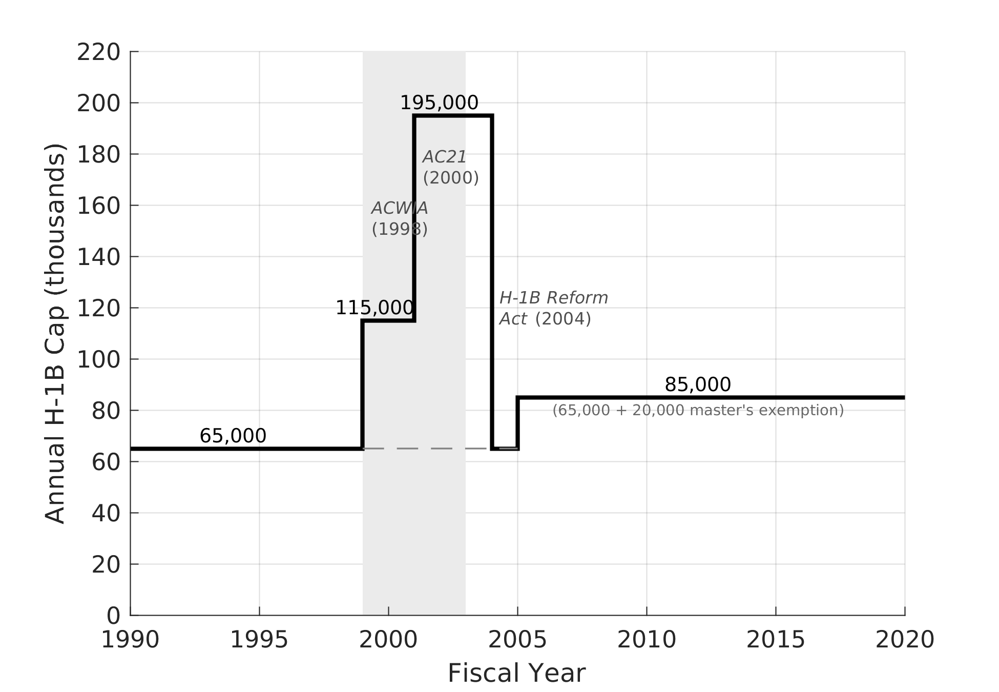
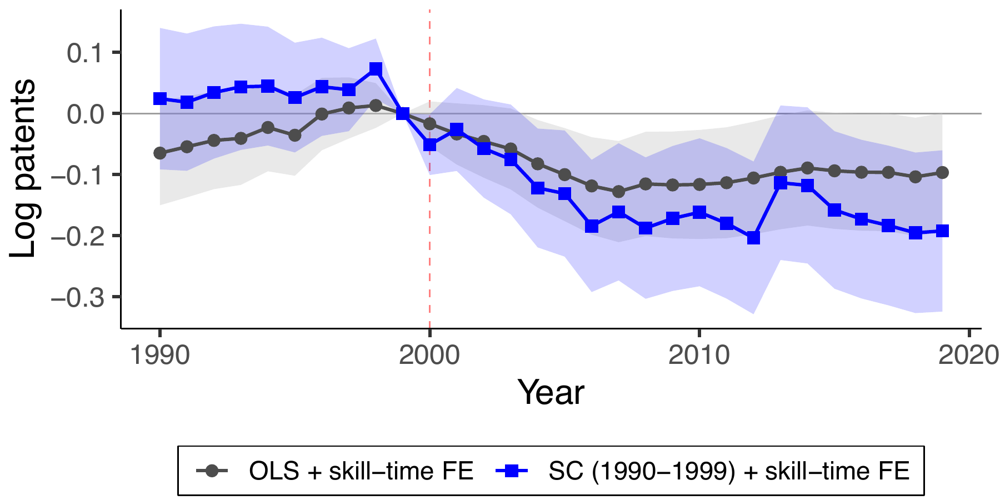
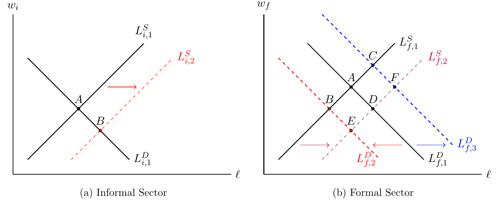
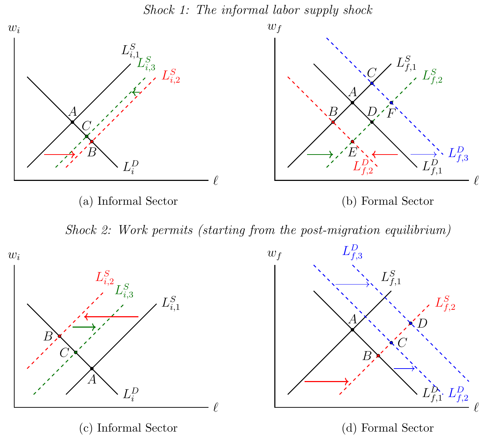

Research
Three of the largest changes to labor markets in the last decade have been unprecedented refugee flows in developing economies, changing immigration policies in developed countries, and the COVID-induced change in where work is conducted. My research covers all three. I have worked on the Syrian and Venezuelan refugee crises, high-skill immigration policies in the US and Canada, and on how the adoption of remote work is impacting gender inequality across several countries.
Effects of Immigration on Labor Markets
My work on immigration began with the refugee crises of the past decade and a question they raised: what are the consequences of granting or denying refugees work permits for the host economy? I study this question in the two largest refugee crises in the world: 3.6 million Syrians in Turkey and 2.5 million Venezuelans in Colombia. Both studies compare regions that receive refugees with regions that do not, and asking what such comparisons miss led me to production networks. That framework now organizes this line of research: it shows when comparisons across regions recover the effects of immigration, where governments should settle refugees to maximize the economic benefits, and how high-skill immigration raises productivity in the United States. I am now extending this framework beyond immigration to minimum wages, where I find the mirror image of my immigration results.
Effects of Immigrants on Non-host Regions: Evidence from Syrian Refugees in Turkey
My first job market paper studies how local immigration shocks affect labor markets and firms across the economy through production networks. I analyze Turkey's Syrian refugee crisis using firm-to-firm VAT records, matched employer-employee records, customs records, firm balance sheets, product-level production data, and labor force surveys. I show that firms buying from host regions demand more labor, while those selling to host regions increase sales. Counterfactuals imply that a 1% labor supply increase in Istanbul decreases local real wages by 0.56% while increasing non-host wages by 0.38%. An identical shock to a non-central region reduces local wages by 1% with negligible spillovers. Immigration lowers local wages, but network position determines whether it also generates economy-wide gains.




This mechanism explains why studies comparing host and non-host regions disagree. Economic migrants tend to settle in large cities, which tend to be more central. There, production networks dampen local wage effects, and spillovers bias comparisons between host and non-host regions in either direction, depending on the economy's technology parameters. Refugees, in contrast, settle close to the border they cross, in typically non-central regions where spillovers are negligible and such comparisons recover the effects of immigration. The contrast explains why studies of refugee crises find larger losses for natives than studies of economic migration, and why my Turkish and Colombian estimates, both identified by comparing regions near the border with regions far from it, find lower earnings for natives.
Where Should Refugees Go? Production Networks and the Welfare Gains from Immigrant Placement
These results also bear on where governments should settle refugees and immigrants during mass migration episodes. In Turkey, settling migrants in central rather than non-central regions raises aggregate welfare by an order of magnitude. Existing placement policies weigh job availability and equity across regions, but not the position of host regions in the production network, resulting in forgone welfare gains. I develop this result in a short paper for the AEA Papers and Proceedings.
Long-Run Effects of H-1B Immigration on the U.S. Economy
The model in my first job market paper also provides a test that distinguishes between two ways immigrants affect an economy. A productivity shock lowers production costs and propagates forward to downstream industries, but not directly backward to suppliers (Acemoglu et al., 2012). A labor supply shock propagates in both directions, because it also changes the mix of labor and intermediate goods that firms use. My second job market paper, joint with Ran Abramitzky, Leah Boustan, and Jens Hainmueller, applies this test to the H-1B program. We exploit the tripling and reversal of the visa cap between 1999 and 2004 at the industry level, where H-1B demand is persistent and the input-output network is observed. Because exposed industries were already on steeper growth trajectories during the 1990s technology boom, our empirical strategy is a reduced-form version of SIV. We find that H-1B immigration raised the long-run incomes of natives and pre-existing immigrants, with gains concentrated in non-STEM occupations and no detectable losses for native workers. The gains propagate mainly forward, through lower prices for downstream industries, and not backward, implying that H-1B immigration also raised productivity.




| Labor supply in computer services | −1.1% |
| Productivity in computer services | −0.5% |
| Income of non-STEM native college graduates there | −1.2% |
| Income in customer industries | −0.5% (1997 network), −0.7% (2017) |
| Real GDP | −0.13%, of which −0.07% productivity |
H-1B is not only immigration policy. It is technology policy.
Restricting it is less like shielding workers from cheap labor, and more like slowing a technology the whole economy runs on.
Formal Effects of Informal Labor: Evidence from Syrian Refugees in Turkey
In my first paper on work permits, I study how Turkish firms and native workers respond to the arrival of Syrian refugees, who were denied work permits and could only work informally. Crucially, I distinguish between native workers in the informal and formal sectors, since theory cannot sign the effect on the latter. Using travel distance as an instrument for refugee location and adjusting for regional pre-trends, I show that low-skill Syrian immigration lowered low-skill natives' salaried employment rates in both the informal and formal sectors. I document two mechanisms: (i) formal firms reduce their formal labor demand, and (ii) new firms do not enter the formal economy. My estimates imply that formal and informal workers are gross substitutes, with an elasticity of substitution of approximately 10. As a counterfactual, I predict that granting refugees work permits could create up to 120,000 formal jobs by raising informal wages.

Synthetic IV Estimation in Panels
While working on this project, I faced an empirical challenge. Regions near and far from the Turkish-Syrian border followed non-parallel economic trajectories before the refugee crisis. Jaume Vives-i-Bastida and I propose a solution that applies broadly to exposure and shift-share designs that rely on the exogeneity of shares. Our Synthetic Instrumental Variables (SIV) estimator combines instrumental variables and synthetic controls to address unmeasured confounding in panel data. We establish SIV's consistency and asymptotic normality under conditions where standard IV fails. In the Turkish application, SIV reveals significant effects that the standard IV does not capture. This paper is Jaume's job market paper. I presented it at the 2024 International Association for Applied Econometrics Conference, where it received the Best Paper Presented by a Graduate Student Award. I have since used SIV in several projects across both of my research lines, as I discuss below.
Formal Effects of Informal Labor and Work Permits: Evidence from Venezuelan Refugees in Colombia
With Dany Bahar and Isabel Di Tella, we test whether my counterfactual predictions for Turkey hold in Colombia. Because Venezuelan refugees initially arrived without work permits and Colombia later granted permits in waves, we can separate the effects of immigration from those of work permits. Using SIV, we find that informal immigration displaced natives from both the informal and formal sectors, implying high substitutability between formal and informal workers (elasticity ≈ 10, as in Turkey). A triple difference-in-differences design exploiting variation across regions, time, and skill groups shows that work permits reduced competition in the informal sector and raised it in the formal sector, as predicted. Our model implies that the permits created 23,100 formal jobs and roughly $42 million in annual tax revenue, which provides an economic rationale for granting refugees the right to work.

Immigration, Housing, and Voting: Evidence from Canada's Post-2015 Immigration Surge
In ongoing work with Jeremy Ferwerda and Jens Hainmueller, we study how the surge in permanent resident admissions that followed the introduction of the Express Entry system, from about 270,000 in 2015 to over 480,000 in 2024, affected local rents and voting. To identify the effect on rents, we combine the policy-induced surge with a past-settlement instrument and relax its share-exogeneity assumption using SIV. We find that immigration raises rents in regions with tight labor markets and in regions where geographic constraints make housing supply inelastic. We are now extending the analysis to house prices, vacancies, and new construction, and will then use variation in housing supply elasticity to isolate the role of rents in shaping political responses to immigration. I am also part of a multi-year collaboration between the Immigration Policy Lab and the Government of Canada to improve its immigration system, a collaboration that will produce both academic papers and policy reports.
No Way Back? Reallocation Frictions and Asymmetric Adjustment to Refugee Arrivals and Returns
In ongoing work with Sarah Winton, we study the return of Syrian refugees from Jordan after the fall of the Assad regime in December 2024, which reverses the labor supply shock their arrival created a decade earlier. We ask whether host-country labor markets adjust symmetrically to refugee arrivals and departures, or whether downward wage rigidity, irreversible investments, and sectoral reallocation frictions make adjustment to departures asymmetric. We are obtaining novel returns data from UNHCR, linked to refugees' individual work experience, skills, and credentials, together with labor market data from Jordan.
Production Network Propagation of Minimum Wage Shocks: Evidence from Turkey
Finally, I am extending the production network framework beyond immigration. Informal immigration and minimum wages are opposite sides of the same medallion: one lowers informal wages, the other raises formal wages, and both propagate throughout the economy. I study the 30% increase in Turkey's minimum wage in 2016 using the same restricted-access administrative and survey data as my first job market paper. I find that the minimum wage raised wages in both the formal and the informal sector, the latter because formal and informal workers are gross substitutes, as my earlier work showed. Firms passed the higher labor costs through to the prices of the goods they produce. Firms more exposed to the minimum wage, because they relied more on minimum wage workers, cut employment and exited at higher rates. The effects propagated along the supply network: the suppliers and customers of exposed firms also shrank, the mirror image of my immigration results. The displaced workers moved to less exposed firms, especially those serving the domestic market: as exposed firms lost market share, their customers substituted toward less exposed competitors. A production network model rationalizes these findings.
Gender Inequality in the Labor Market
My second line of research studies child penalties: the disparate impact of parenthood on women's labor market outcomes relative to men's. In developed countries, these penalties explain much of the gender inequality in the labor market. We do not yet know which occupations they come from, or whether technological changes that make occupations more flexible, such as remote work, can reduce them. I study these questions in two papers and two ongoing projects. I began by documenting how child penalties vary across occupations, which led me to study whether remote work reduces child penalties in the United States, and why its effects differ across countries.
Occupational Heterogeneity of Child Penalty in the United States
I develop a new rotating-panel approach to estimating child penalties and use it to show that occupational segregation between genders, the single largest factor in the gender pay gap, is partly driven by parenthood. Rotating panels such as the Current Population Survey are much larger and more widely available than standard panels, which makes analyses by occupation feasible. The method relies only on the random timing of the first child, the assumption underlying the canonical event-study design, without the matching step of the pseudo-panel approach (Kleven, 2025). I find that fatherhood's well-established null effect on employment masks offsetting changes: fathers' employment decreases in occupations like finance and increases in others like construction. Mothers leave most occupations but select into those with part-time options. These occupational changes explain 40% of the income penalty for women and most of the wage penalty for both genders.
Effect of Remote Work on the Child Penalty: Evidence from the United States
Christina Langer and I examine how the post-COVID expansion of remote work affected child penalties. Our identification strategy exploits the heterogeneous rise in remote work across occupations. We estimate occupation-level child penalties with the pseudo-panel approach in the American Community Survey, and find consistent, though less precise, results with my rotating-panel approach in the Current Population Survey. Because occupations that adopted remote work were already on different child penalty trajectories before the pandemic, we adjust for these pre-trends with a reduced-form version of SIV. We find that remote work reduces the hours penalty for mothers, eliminating one-seventh of it for the average remote occupation. Remote work has no effect on mothers' employment, income, or wages, and no average effect on men. Time-use data suggest why mothers' income does not rise with their hours: mothers in remote occupations spend more time supervising children while working, which lowers their productivity per hour.
Remote Work and Fathers' Long Hours: Evidence from the United Kingdom
In ongoing work, I apply the same design and find the opposite pattern: remote work reduced the probability that fathers work long hours relative to childless men, with no effect on mothers.
Remote Work, Gender Norms, and the Child Penalty
The question of why the same technology changed mothers' hours in the United States but fathers' hours in the United Kingdom motivates a larger project with Natalie Irmert and Christina Langer. We test whether gender norms and institutions shape how remote work changes the child penalty. Across roughly twenty countries in the Americas and Europe, we estimate child penalties by occupation from labor force surveys and administrative data, use the full SIV estimator to instrument remote work adoption with the task-based remotability of occupations, and relate the resulting effects to pre-pandemic norms and institutions. Countries where remote work barely expanded serve as placebo tests. We complement this cross-country design, which varies both norms and institutions, with population registers from Sweden, where we hold the institutional context fixed and compare similar individuals with different gender norms. The registers also record the parental leave and sick-child care days taken by each parent, allowing us to study how remote work changes the division of childcare within couples. The cross-country project is funded by the LSE Remote and Distributed Work Research Initiative.
Other Work in Applied Microeconomics
Driving While Hungry: The Effect of Fasting on Traffic Accidents
I study the impact of hunger on traffic accidents by exploiting the fact that working hours in Turkey are not adjusted during Ramadan. I find that hunger induced by fasting increases the probability of an accident by 25%, which is smaller than the effect of driving while intoxicated but larger than the effect of mild sleep deprivation.